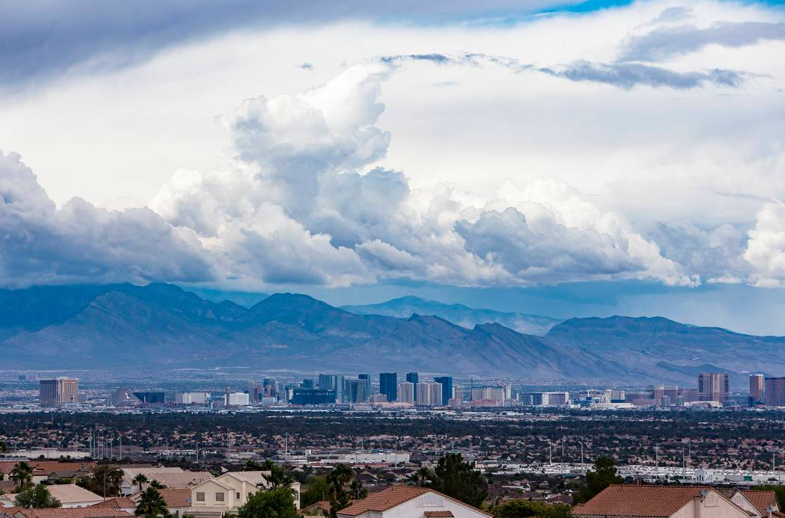

Four (4) reasons why you should stay in Las Vegas
Weather
The good news is that Las Vedas enjoys more than 310days of sunshine each year.East coasters and people from hot and humid climate appreciate lack of snow and humidity. And we only get about 4" of rain each year.
Winters are generally short and mild. Hot weather can last from June to September, although 3 months out of the year is extremely hot there while the other 9 months of the year are gorgeous.
No Natural Disasters
You really can't boast this withous appearing intensive,but this is one of the best parts of living in Las Vegas. Next Hurricane season you will be safe because those storms will not reach Nevada. You will also steer clear of earthquakes and Tornadoes and there is no chance a Blizzard will keep you from going on your afternoon run.
You might deal with flooding from time to time and wind can be a nuisance, but you are free to talk about the lack of natural disasters because Las Vegas does not have any.
The Outdoor
THE ADVENTURES
Just twenty minutes from the center of the town, red Rock Climbers. Nothing will make your friends jealous more than when they see you sporting that tan you got while learning how to belay.
Getting a bit outdoorsy is too easy when you are living in Las Vegas as you are surrounded by local hiking trails and plenty of opportunities to mountain bike. Seven National Parks are within a few hours'drive of Las Vegas making your new home the perfect base camp for exploration.
The Dinning Scene
Even if you never went to Las Vegas Strip to eat,you will still be enjoying one of the most exciting dining scenes in the country. Michellin-starred Chefs are cooking off the strip and some of the top names in the culinary world, like Gordon Ramsay, Joel Robuchon and Michael Mina, have restaurents in Las Vegas from sustainable seafood to authentic farm-to-farm table restaurents, Las Vegas has it all.
No State Income Tax
You will be surprised at just how much you will save by not having to pay for state income taxes. Luckily, gaining revenue helps out Las Vegas locals in that regard. When life is relatively normal and not affected by global pandemics, nearly a billion dollars in gambling taxes and revenues is pumped into the local economy annually.
With all the money you save on taxes, you will be able to consider buying a home you are used to renting elsewhere. That will definately make your friends jealous when they realise you won 2,200 square foot house and pay less than their rent on that 500 square foot apartment.
Tourist Attractions
Gondola Rides
Your Venetian experience isn't complete without a traditional gondola ride as the gondoiler serenades you with classic italian songs. Take beautiful italian inspired architecture with an indoor ride, or glide along the outdoor lagoon to get the unique view of the Strip. Gondola rides are perfect for romantic dates with your sweetie; however, each gondola seats four, so this makes for a fun, memorable ride for the whole family, too. Be sure to catch the free Godoiler March each day in the morning and afternoon, as they parade singing through the shoppes to and from the North Canal Turnaround to start their day!
KAMU Ultra Karaoke
It's time to drop the mic right! Guests can sing their hearts out at KAMU Ultra Karaoke, the first high-end Karaoke club on the Las Vegas Strip and the most noteable in the world. oastin gan urivaled experience with the ultimate in the luxary and technology, KAMU is khow Vegas does Karaoke. Guests can sing in the comfort of one of fourty of KAMU's socially distanced, upscale singing suites at the Grand Canal Shoppes at the Venetian Resort Las Vegas,in the Plazzo Tower. KAMU is the ideal host for events ranging from casual business functions to blowout celebrations with family and friends
Mods
WELCOME TO IMMERSIVE! World of culture and creativity. Museum of Dream Spaces (MODS), is the first museum mainly exhibiting digital art in the United States. The design concept of MODS is inspired by art design from Yayoi Kusama(famous of infinite rooms) and the development of digital art. The aim of MODS is to provide an immersive, magical and unique art appreciative experinces to the visitors.
The Void
The Void is the most immersive virtual reality experience ever. It offers the ability for friends an family to step in to their favourite movie, video game or adventure. At The Void, guests can see smell touch and experince the impossible . Create the real in a virtual world by experiencing star Wars: Secrets of the Empire, Avengers:Damage Contro, and Jumanji: Reverse the curse.
Entertainment and Fashion
Day Trips and Tours
Las Vegas being one of the top holiday destinations in the world, there is no lack of entertainment tours in the city! Here you can find anything from Grand Canyon helicopter or airplane tours to skydiving, to Death Valley Day Trips, Doubledecker Bus sightseeing tours and Dinner cruises. For the most adentourus there are the most thrilling extreme things to do. Let all your senses absorb all that city has to offer! Las Vegas is an amazing place, but it's also amazingly loud and honestly everybody sooner or later grows tired of having all this fun! But fear not- Las Vegas entertainment includes gorgeous parks and recreational areas, perfect for a day trip or for overnight camping.
Adult Entertainment & Nightlife
Las Vegas is notorius around the world for it's mesmerizing adult entertainment, nightlife, stripper clubs, pool parties, and everything you think is neccessary for having fun. It's also favorite spot for people looking to celebrate bachelor parties and because the city offers many facilities that will make these special events even more memorable. Here you can find an enormous choice of night clubs, bars and lounges. No wonder that bachelors and bachelorettes choose the city as the ultiate destination for a vaccation!
More things to do
The City of all sins and excesses, Las Vegas is the perfect destination for a fun holiday filled with adrenaline and excitement. Vegas is much more casinos and gambling. There are more entertainment options in Las Vegas than shows and nightlife! You will find here plenty of free activities, beautiful golf coursesfor a golf vaccation, many attractions in and around the city, museums, spa salons and ofcourse entertainment for kids. Weather you are looking for a place where to spend an actrive honeymoon or an unforgettable family vaccation, you will find anything you need in this thriving oasis located in the heart of the Nevada Dersert. The best of Las Vegas are more entertainment options in Las Vegas than shows and nightlife!
Las VEGAS casinos dress code
SMART CASUAL
Casinos here go to great lengths to make players feel at home and show a lot of flexibility when it comes to dress code. There is no standard dress code for Las Vegas but people are expected to use their common sense.
Casual clothing for even most luxurious casinos, as long as player dress up decently. You can go to any Vegas Casino wearing skirts and trousers and no body will frown your attire. However it needs to be smart.
Temp effect on fashion
Be prepared for the temperature, there is a lot of truth to this advice because you will quickly find that there is a noteable difference in temperature between the hot outdoors and the air conditioned casinos inside. And this difference can be significant.
Business World
Consulting
Openning a consulting agency is one of the best businessto stert in Las Vegas. It does not require a massive initial investment and you can slowly grow it the more wore you take on. It's a great option because you can hire professional movers and get your work place ready in no time with only a little it of money. Your area of expertise will be the determining factor here.It is also adviseble to have some working experience in a particular industry before you can start working as a consultant.
Sustainability is a big topic in Las Vegas as it is anywhere else so that might be a great in for you if you have the knowledge and the skillset. Another option will be cannabis licencing consulting, this won't require extensive knowledge of the topic beforehead.
Admin
Another way you could help other businesses to grow is by offering admin services. A large chunk of aforementioned cannabis consultancy work could be described as admin work, as it has a lot to do with the organisation of the business and the regulations it has to adhere to. Bookkeeping as well as tax and legal services, are even more straight forward admin operations. They are also destined for success as to other business you can do without them.
More things to do
The City of all sins and excesses, Las Vegas is the perfect destination for a fun holiday filled with adrenaline and excitement. Vegas is much more casinos and gambling. There are more entertainment options in Las Vegas than shows and nightlife! You will find here plenty of free activities, beautiful golf coursesfor a golf vaccation, many attractions in and around the city, museums, spa salons and ofcourse entertainment for kids. Weather you are looking for a place where to spend an actrive honeymoon or an unforgettable family vaccation, you will find anything you need in this thriving oasis located in the heart of the Nevada Dersert. The best of Las Vegas are more entertainment options in Las Vegas than shows and nightlife!

Perfect weather for those who likes spending time outdoors. Las Vegas is the place to be if you are looking to live a life in the sun.

The chances of natural disasters especially earthquakes is much lower, same applies to the risks of tornado damages!

Luxurious activity adventure trips; Biking, Hiking, Kayaking and family adventures. The world-wide award winning bike tours, walking and Hiking!
More than 40 big name Chefs have hung their shingles at one of the resorts along the strip giving tourists who visit Sin City every year an ample variety of very good and splashy places to dine.
Residents pay no personal income tax, and the state offers no corporate tax, no franchise tax, and no inventory tax.
Take beautiful italian inspired architecture with an indoor ride, or glide along the outdoor lagoon to get the unique view of the Strip.
Guests can sing in the comfort of one of fourty of KAMU's socially distanced, upscale singing suites at the Grand Canal Shoppes at the Venetian Resort Las Vegas,in the Plazzo Tower.
Here you can find an enormous choice of night clubs, bars and lounges. No wonder that bachelors and bachelorettes choose the city as the ultiate destination for a vaccation!.